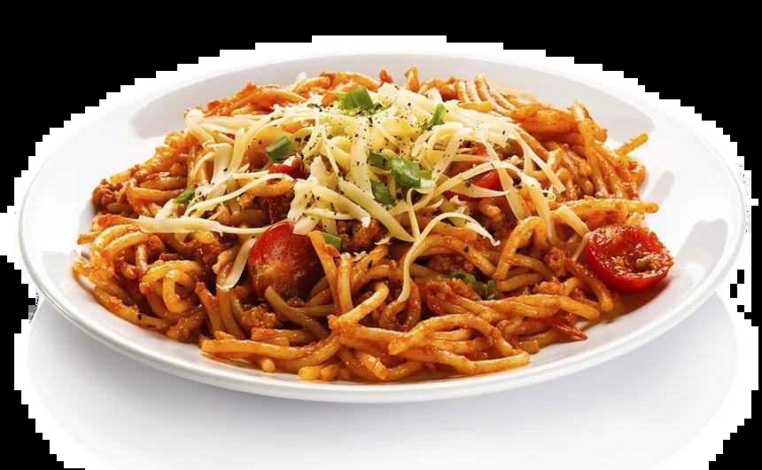

Pasta

Pasta is een veelzijdig gerecht uit Italië, gemaakt van deeg op basis van tarwe, vaak gecombineerd met een heerlijke saus en verschillende toppings, variërend van vlees tot groenten, voor een voedzame maaltijd.
- Pasta (bijvoorbeeld spaghetti, penne, fusilli)
- Tomatensaus of roomsaus
- Olijfolie
- Knoflook
- Parmezaanse kaas
- Verse basilicum
- Zout en peper
- Optioneel: gehakt, kip, groenten
- Kook de pasta volgens de aanwijzingen op de verpakking in ruim kokend water met een beetje zout.
- Verhit de olijfolie in een pan en bak de knoflook 1-2 minuten op laag vuur tot deze geurig is.
- Voeg de tomatensaus of roomsaus toe aan de pan en breng aan de kook. Laat het 5-10 minuten sudderen om de smaken te laten ontwikkelen.
- Voeg zout en peper naar smaak toe en meng goed.
- Giet de gekookte pasta af, maar bewaar wat kookwater voor een romiger saus.
- Voeg de pasta toe aan de saus en meng goed door. Voeg eventueel een beetje kookwater toe om de saus te verdunnen.
- Serveer de pasta met Parmezaanse kaas en verse basilicum.
- Geniet van de pasta! Voeg desgewenst extra toppings toe zoals gehakt, kip of groenten.